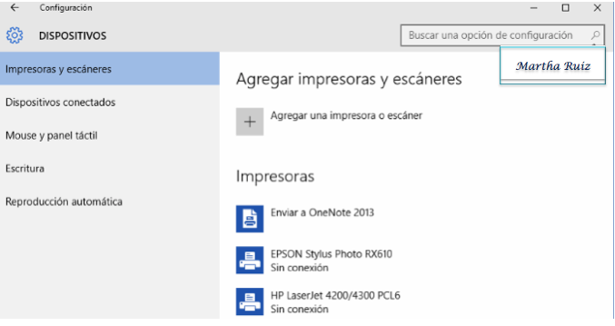

Vamos a ver los principales tipos de ventana que nos encontraremos al usar Windows 10, y verás que todas tienen la misma base y un funcionamiento similar.
- Ventanas del Explorador. Accederemos a este tipo de ventana cada vez que abramos una carpeta para ver su contenido. Veremos el Explorador de Windows con detalle en la Unidad 5.
- Ventana de opciones de configuración. Son ventanas desde las que podemos configurar el sistema. En la parte izquierda tienen un panel de Tareas con las diversas categorías del tema correspondiente, mientras que en la parte derecha aparecen los controles para modificar las opciones de dicha categoría.

- Ventanas de diálogo abrir/guardar. Tienen una apariencia similar al Explorador de archivos (sin la Cinta de opciones), pero sirven para elegir un archivo o carpeta a abrir, o la ubicación de un archivo a guardar.
- El aspecto de la ventana depende también del programa desde el que se abra. Por ejemplo, la siguiente tiene un aspecto más parecido a versiones anteriores de Windows.
En la siguiente página mostramos más ventanas.